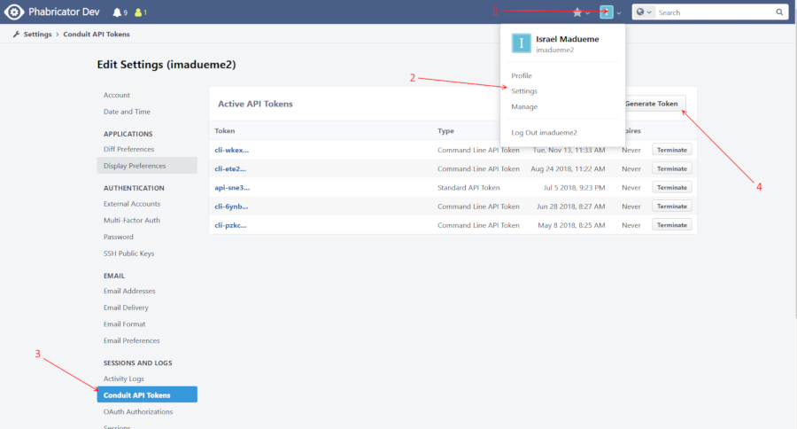

To generate a Phabricator API token, go to Settings ->
Conduit API Tokens -> Generate Token. Keep this token secret and use
it only for Phabricartor-in-Bugzilla. You cannot reuse a “cli-” token;
please generate a new API token (these start with “api-“).
